Trascina per ruotare la vista, pizzica o usa la rotella per avvicinarti.
Il pi greco come rapporto tra circonferenza e diametro, misurato su oggetti veri in 3D. L'area del cerchio dai poligoni regolari inscritti, arco, settore, corona e segmento circolare, con calcolatrice ed esercizi.
